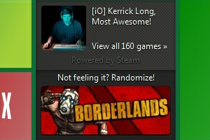

Mostly Harmless

This is a Google Chrome extension built for users of reddit.com.
Technologies
- JavaScript
- Chrome Extension API
- i18n
SteamPowered [aNTP]
This is a widget for Awesome New Tab Page with Random Steam Game functionality.
Technologies
- JavaScript
- Steam Community API
- aNTP API